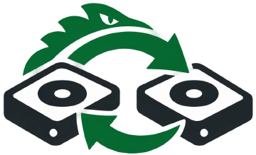
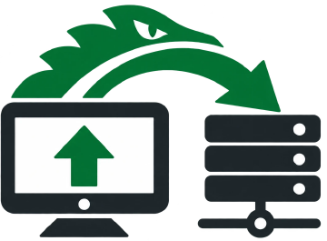

Les logiciels

CloneGator disponible
Cloner un disque vers plusieurs disques à la fois, le sauvegarder en image et le restaurer. Seules les données utiles sont copiées, et le disque source reste en lecture seule du début à la fin. Sur une clé USB démarrable, ou installé sur une station de clonage.

GatorPXE en préparation
Un serveur de démarrage réseau, prêt en un geste. Les postes démarrent CloneGator par le réseau, sans clé USB. Déposez des images ISO ou WIM dans un dossier, et elles apparaissent au menu de démarrage.
Libres et gratuits
Les logiciels GatorTools sont gratuits, pour tout le monde. Leur code est sur GitHub, sous licence MIT. Ils ne dépendent que d'outils Linux éprouvés, disponibles dans les dépôts de Debian et d'Ubuntu.